Measurement System Analysis · Beyond Normal
Camera-Based Barbell Velocity
Repeatability, trueness and uncertainty of an iPhone bar-path measurement, characterised against free fall. Every figure below is measured.
Can I trust this?
Yes — and here is exactly how far.
We tested the whole measurement against the one acceleration everybody already has: Earth’s gravity. It is one of the best-known physical constants, it is the same in your garage as in ours, and it does not care what we hoped to find. Drop a loaded barbell, film it, and the app’s answer can be held against a number nobody gets to negotiate. Whatever the gap turns out to be, it is measurable — and the rest of this page is that measurement.
We did that fifteen times.
- Measurements
- 15Five separate drops, each analysed three times from an independent placement of the calibration circle.
- Repeatability
- 1.25%How much the answer moves when you do the same thing again. The target was 2%, written down before any data existed.
- Off gravity by
- 3.00%With no correction of any kind applied, and it reproduces to ±0.46% — a property of the setup, not a limit of the method.
- Effect on velocity loss
- NoneLoss is a ratio measured through one ruler, so that offset divides out exactly. It cannot reach the number.
Two different things can be wrong with a measurement. Whether you get the same number twice, and whether that number sits where it should. A tape measure with a bent end is perfectly repeatable and consistently wrong; a stretchy one is honest on average and useless in practice. Most claims of “accuracy” do not say which they mean. This one measures both.
The study did not only measure the feature. It repaired it.
Running it found nine defects and forced five design changes — four of the defects and all five of the changes in the bar-path feature people actually use. One of them had every analysis the app had ever run working from 30 frames a second when the phone had recorded 120.
All nine are published in Appendix B, including the two that turned out to be worthless. None of them was visible from the app’s own output — the fit quality read a perfect 1.000 through most of them. They only appeared once the measurement was pointed at an answer that was already known.
What we did not test. One operator, one phone, one plate, one room, one session. The 3.00% belongs to a tripod that never moved, so it is not a number your setup inherits — which is why the app ships the drop test itself. Measure your own.
Everything below is the engineering: the method, the statistics, the causes ruled out, and every limitation we know of. Every figure in it is measured.
§1 Purpose and scope
Every velocity-based training product claims accuracy. None publish a characterisation. This is one, for a measurement that reads bar speed from an ordinary phone camera.
A dropped barbell accelerates at g — the net acceleration the Earth imparts to objects, standard value 9.80665 m/s² — which makes free fall the only test in this domain whose correct answer is not itself a measurement. It exercises the entire chain at once — the plate-diameter calibration that turns pixels into inches, the frame timing that turns them into seconds, and the tracker between them. A reading of 9.81 m/s² certifies all three together; any other reading condemns them together.
Scope. One measurement system, one operator, one bar and plate, one venue, one camera, one format. Repeatability and bias only. Clause 8 states what this does not cover, and that list is longer than this one.
§2 Method
Five drops of a barbell loaded with an Olympic bumper plate onto a mat, filmed at 4K 120 fps in portrait from a tripod square to the drop, camera position unchanged throughout. The plate face is what the tracker follows, and its 450 mm diameter is what converts pixels to inches. Each of the five recordings was then analysed three times, each pass beginning with an independent placement of the calibration circle.
Focus and exposure were left on automatic. Locking both would have been the better protocol — autofocus can alter apparent scale mid-clip — and this records what was done rather than what should have been.
That structure is the point. The circle is placed by a human and is the system's only ruler, so the operator sits inside the measurement rather than beside it. Analysing each clip once would confound the operator's contribution with the drop's; three independent placements separate them.
Pass 3 was taken after the placement interface gained full-screen and 12× zoom, to test whether operator contribution was limited by what the operator could see.
§3 Acceptance criteria
Declared before any data was collected, and derived from the decisions the number drives rather than from what looked achievable.
| Criterion | Basis | Target | Result | Status |
|---|---|---|---|---|
| Repeatability | Distinguishing 10/20/30% velocity-loss thresholds | σ ≤ 2% | 1.25% | Met |
| Bias, absolute zones | Velocity-zone prescription | ≤ 2% after calibration | -3.00%, no correction applied | Open |
| Bias, velocity loss | Loss is a ratio; scale cancels exactly | — | Cancels | N/A by design |
| Linearity | Drop sweeps 0–4.4 m/s from rest; lifts occupy 0.1–1.0 m/s | No significant slope | Range covered; slope not separately resolved | Partial |
Velocity loss is a ratio of two velocities measured through the same ruler, so any constant scale error divides out exactly. For the quantity most velocity-based training decisions actually rest on, the bias in Table 3 is arithmetically irrelevant. It matters only for absolute velocity zones.
§4 Results
Fifteen measurements. Every one returned a value; none was rejected.
The measurement is a least-squares fit of the plate's vertical position against time to y = at² + bt + c, over the frames between release and first impact. Acceleration is |2a|; b is the speed at the first fitted frame and c its position. R² is the fit of that parabola to those positions, and it was 1.000 in all fifteen — reported chiefly to show that it carries no information about accuracy, see §7.
| Clip | Pass 1 | Pass 2 | Pass 3 | Mean | Range | Bias |
|---|---|---|---|---|---|---|
| A | 9.52 | 9.45 | 9.63 | 9.533 | 0.18 | -2.8% |
| B | 9.57 | 9.46 | 9.57 | 9.533 | 0.11 | -2.8% |
| C | 9.40 | 9.32 | 9.34 | 9.353 | 0.08 | -4.6% |
| D | 9.54 | 9.62 | 9.40 | 9.520 | 0.22 | -2.9% |
| E | 9.56 | 9.69 | 9.61 | 9.620 | 0.13 | -1.9% |
| Pass mean | 9.518 | 9.508 | 9.510 | 9.512 | — | -3.00% |
The three pass means span 0.11% of reading. Three independent re-placements of the ruler, on five separate drops, reproduce the same answer to a tenth of a percent. Whatever is displacing this measurement from 9.81 is not random and is not the operator.
Variance decomposition
| Component | Type | sd (m/s²) | % of reading |
|---|---|---|---|
| Placement and analysis | A | 0.0784 | 0.82% |
| Drop execution and setup | A | 0.0861 | 0.90% |
| Plate diameter, 450 ± 2 mm (specification) | B | — | 0.26% |
| Type A is evaluated from the scatter of repeated measurements; Type B by any other means — a specification, a certificate, an engineering judgement. The plate term is Type B because it rests on the standard Olympic bumper diameter of 450 mm rather than on anything measured here. The ±2 mm is an assumed manufacturing tolerance covering training plates rather than a competition-certified one, treated as rectangular. | |||
| Combined standard uncertainty, uc | — | 1.25% | |
| Expanded uncertainty, k = 2 (≈95%) | — | 2.50% | |
| The components are added in quadrature — squared, summed, square-rooted — because independent errors partly cancel rather than stacking. Combined standard uncertainty is the one-sigma figure: about two measurements in three land within it. Expanded doubles it, and roughly nineteen in twenty land within that. | |||
| Bias vs 9.80665 m/s² | -0.2946 | -3.00% ± 0.46% | |
Precision and trueness separate cleanly here. The measurement repeats to 1.25%. Its offset from the reference is 3.00% and reproduces to ±0.46% across three independent passes on five separate recordings — larger than the entire 95% interval, which is the signature of a fixed constant rather than instability. A constant of that kind is either corrected or declared. This one is declared, because velocity loss does not see it.
The study design expected the operator to dominate. It does not: placement contributes 0.82% against 0.90% for everything else about executing a drop — comparable, not larger. Where the plate lands, how it is lit and what the seed frame looks like matter as much as the fingertip does. That is one of the things the study was run to find out.
§5 Isolating the operator's contribution
Placement is the largest single component in Table 3, and it is the one a human controls, so it was the first candidate for the bias. Between passes 2 and 3 the placement screen gained full-screen presentation and 12× zoom. In a 260-point preview a 4K plate spans roughly three image pixels per screen point, so a pixel of calibration was not reachable because it was not visible.
Across all five recordings the paired change is −0.03% (t = −0.06, 4 df). That is the result this clause exists for: placement is eliminated as the source of the bias. A cause removed by measurement is worth more than a cause suspected, and it redirects the remaining search onto the fixed camera geometry in §6.
What it does not establish. One operator ran all fifteen measurements, and by pass 3 he knew exactly where that rim was. The finding is that magnification did not change this operator's result — it says nothing about a first-time user placing a circle on a plate they have never measured, which is a different population and was not sampled.
The change was retained on that basis. It is a usability improvement whose value sits outside what this study can measure, and one clip did move 2% before the full set showed the mean had not — a reminder that with five recordings and a 1.3% spread, nothing under about 1.7% is a signal.
§6 Causes eliminated
Each of the following was excluded by derivation or by measurement, not by assumption.
| Candidate | Magnitude | Disposition |
|---|---|---|
| Operator circle placement | −0.03% (t = −0.06) | Eliminated by measurement, §5 |
| Plate diameter vs specification | ±0.26%, Type B | Not a candidate — see Table 3 |
| Motion blur; tracker lag; exposure offset | 0.00% | Structurally absorbed into the fitted velocity term |
| Air resistance and buoyancy | −0.13% | 20× too small |
| Rolling shutter | ≈ 0% in portrait | Sensor readout runs perpendicular to the fall |
| Camera roll | (1 − cos ρ); 0.14% at 3° | Second order |
| Camera pitch (keystone) | −1.5 to −2% per degree | Open |
| Calibration plane ≠ fall plane | −1% per cm, order of magnitude | Open |
| Frame time base | unquantified | Open |
The three that remain open share a property that fits the data: they are fixed in the camera's geometry, and the tripod did not move for the duration of the study. A constant setup error produces exactly what Table 2 shows — a bias stable to a tenth of a percent across every recording and every pass.
§7 Two instrument findings
R² is not a quality gate
R² read 1.000 on all fifteen measurements, including the one that was 4.8% wrong. The quadratic term dominates the variance of a falling body, so a fit can be arbitrarily misplaced and still describe a parabola. Every fit-quality figure in this class of product has the same defect. The instrument now reports the worst frame's distance from the curve in millimetres instead — a physical quantity that does not flatter itself.
Reliability, before and after
Before the corrections in Appendix B, four drops yielded one usable measurement. After, fifteen of fifteen returned a value. A measurement that works half the time cannot support an accuracy claim however close its successes land, and that failure was invisible because failed measurements were being hidden rather than displayed.
What two of those failures looked like
Both of the cards below are pre-correction. They are not a before and an after — they are two different defects, each caught and fixed before the measurements in Table 2 were taken. Neither behaviour survives in the shipped tool.
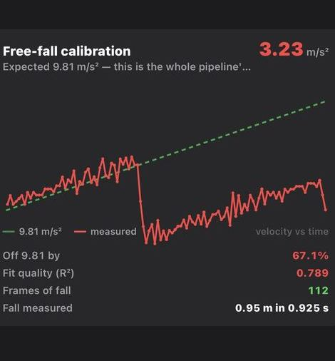
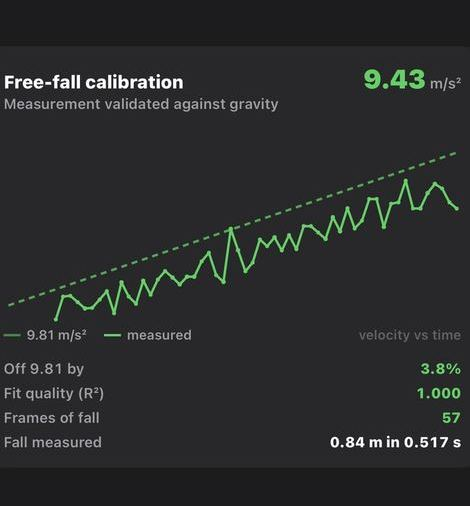
Note the shape of the failure: the measured line sits below the reference for the whole sweep yet still reports 9.43. On a velocity plot g is the slope, and that line is offset, not tilted — a tilt would mean the calibration was wrong; an offset means the window was. The fit had opened before the bar was released, so extrapolated back it claims a dropped barbell travelling upward at 0.76 m/s. On a position plot the same defect is an unremarkable parabola.
§8 Limitations
What follows is not covered by any figure above. It is scoped to what a known mechanism could plausibly do — an untested case with no mechanism behind it is not a limitation, it is a sentence.
- Linearity is partly covered, and the uncovered part is one-sided. Each drop begins at rest and sweeps continuously to 4.4 m/s, so the 0.1–1.0 m/s lifting band is inside every measurement rather than extrapolated to — about 20% of the frames in each fit are taken there. And the mechanisms that degrade a camera measurement all worsen with speed: the bar travels 37 mm between frames at the bottom of a drop against 4 mm during a squat, so the drop is roughly nine times the tracking difficulty of the lift it stands in for. For any error that grows with speed, the figures above are an upper bound. No mechanism is known that would run the other way — that would take an error growing as the plate slows — so nothing identified is left unbounded.
- Reproducibility across operators is not assessed. One operator, so the between-operator term is structurally absent. Its likely size is constrained from two directions: the within-operator figure is 0.82%, and the placement step now carries full screen, 12× zoom and axis ticks specifically to narrow the room two people have to differ.
- Stability over time is not assessed. All fifteen measurements come from one session.
- The plate was not independently verified. Its diameter is carried as the specification with tolerance — 450 ± 2 mm, Type B — rather than as a measured value, because nothing on hand could measure a chamfered rubber rim to better than the tolerance itself. At 0.26% against 0.82% from placement, the term does not repay a better instrument.
- One configuration throughout — one bar and plate, one camera, one venue, one format, one camera position. Generalisation to other plates, phones and rooms is untested.
- The offset is characterised but not attributed. It reproduces to ±0.46% and §6 narrows it to the camera's fixed geometry or the frame time base. It is not corrected in the product, and that is a decision rather than an omission: the question was whether the measurement is accurate within a delta that matters for training, and at 3.00% — cancelling entirely for velocity loss — it is.
§9 Conclusion
The question was simple: can an ordinary phone measure bar speed accurately enough for training? It can, and now there is a number attached rather than an assurance.
Fifteen measurements against a constant that does not care what anyone hoped for. 1.25% combined standard uncertainty — against a 2% criterion fixed in writing before a single drop was filmed — and 3.00% from standard gravity with no correction applied at all. For velocity loss, which is what most velocity-based training decisions actually rest on, that offset divides out exactly and the repeatability figure stands unmodified.
What makes those numbers worth anything is what it took to get them. Nine defects in Appendix B were found by running this study and fixed before the data in Table 2 existed — a bounce fitted as part of a fall, a card whose own arithmetic did not close, a calibration drawn at half the available resolution. R² read 1.000 through most of them. None of it was visible until the measurement was pointed at an answer that was already known.
What the offset means for a velocity reading. Absolute velocity carries the same repeatability and an offset of between 1.51% and 3.00%. Acceleration is a distance over a time squared, so the two possible causes do not carry through equally: a spatial error passes into velocity in full, while a timing error passes as the square root of the acceleration ratio — √0.9700 = 0.9849, or 1.51%. Separating them needs a measurement this study did not take.
No further characterisation is planned, and that is a decision. The measurement clears the bar it was given, by a margin, for the job it does today. Appendix C lists what would be worth running next and what would have to be true for it to be worth running — every entry there is gated on a feature that does not exist yet, not on a doubt about this one.
§10 Appendix A — instrument outputs
All fifteen, unselected, in acquisition order. Clip C is visibly the poorest in every pass: a single-frame tracker excursion mid-plot, the worst residuals of the set at 13–18 mm, and the lowest reading of the set each time. It was not excluded from any figure in this report.
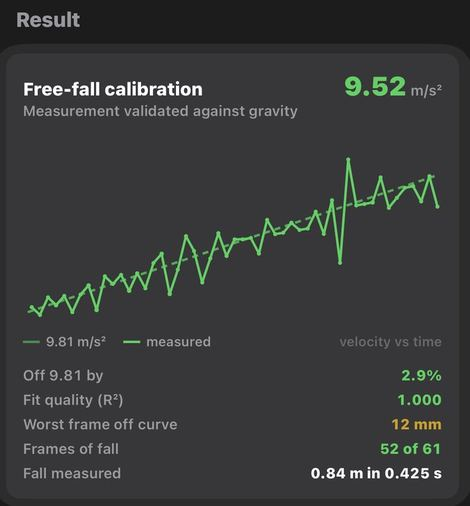
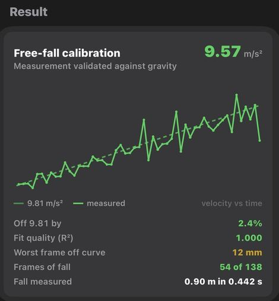
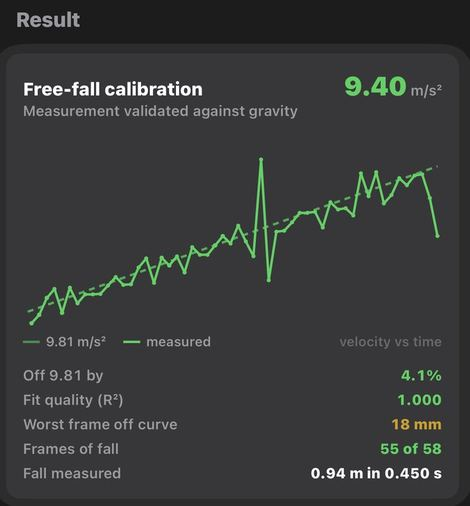
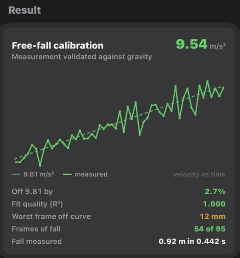
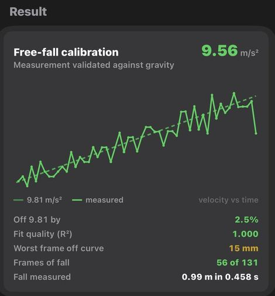
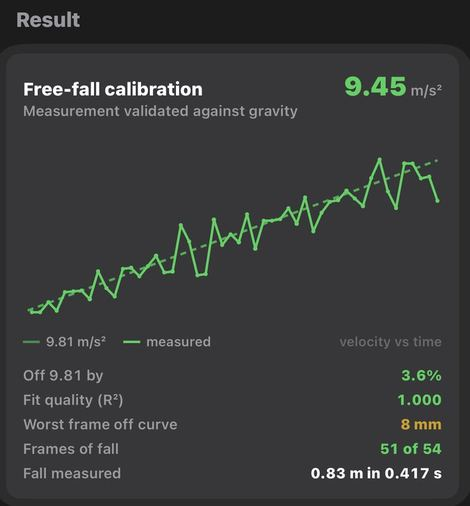
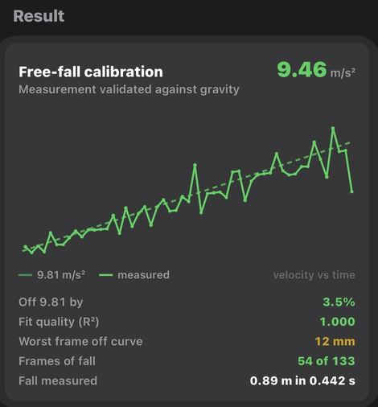
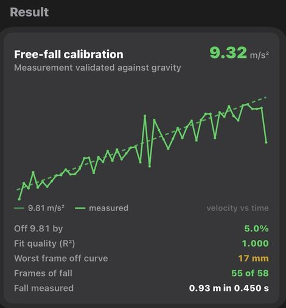
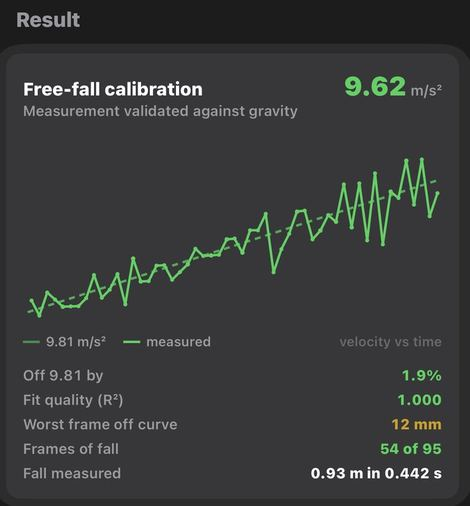
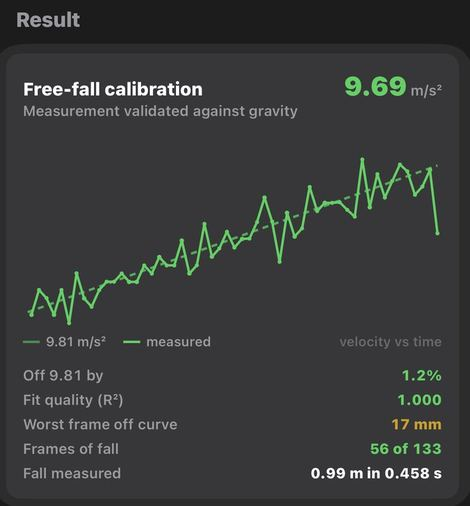
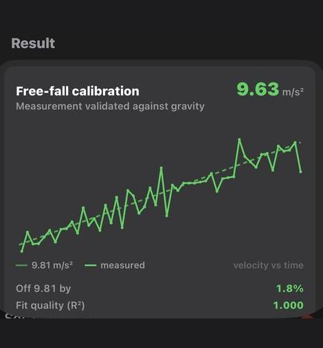
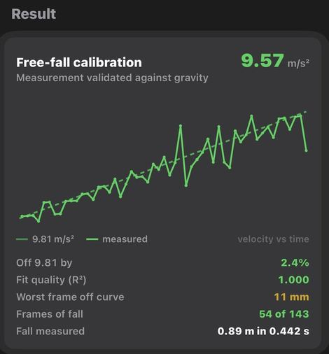
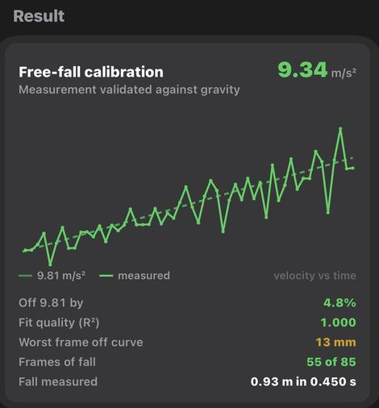
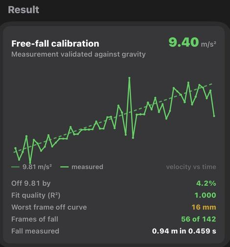
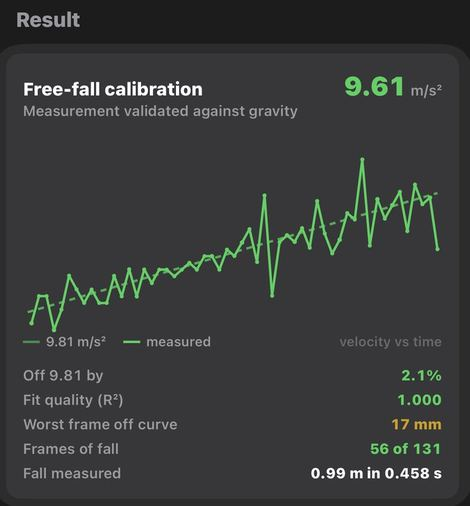
§11 Appendix B — defects this study found and fixed
Every one of these was found by running this study, and every one was fixed before the measurements in Table 2 were taken. None of them reached a user.
They are published because the list is the point. A feature that measures something can be shipped on a plausible-looking screenshot, or it can be taken apart until the numbers survive a reference that does not care what anybody hoped for. Every one of these was only visible because the measurement was pointed at an answer known in advance — R² read 1.000 through most of them.
The study was run to establish confidence in the measurement. It also repaired the product, which was not its purpose and is the more useful outcome. The right column says which: four of the nine reached the shipping bar-path feature that measures your set, three were confined to the drop-test tool itself, and two fixed a detector that was later removed on other grounds.
The four that landed are the load-bearing ones. Frame rate is the whole temporal resolution of a rep — at 30 fps a turnaround is located to ±17 ms and a five-frame peak spans 167 ms of the lift; at 120 fps that becomes ±4 ms and 42 ms. And the tracker is not a detail of the drop test, it is what follows the plate through every rep you film.
And what it changed that was never a defect
These were working as designed. The study is what showed the design was the limit — which is a different and more useful thing for a study to do than find bugs.
| Change | Why the study forced it |
|---|---|
| Full screen, 12× zoom, mode toggle and axis ticks for circle placement | Placement is the largest single component of the uncertainty budget at 0.82%. In a 260-point preview a 4K plate spans about three image pixels per screen point — a pixel of calibration was unreachable because it was invisible. Nothing in the numbers said so until the budget was decomposed. |
| The calibration stated on screen, in pixels and px/in | Every velocity scales off one number that the app knew and never showed. It can now be checked against a tape instead of inferred from a result that looks plausible. |
| Snap removed | It never once succeeded on real footage in this gym. An assist that always fails is worse than none: it invites you to keep trying, and its failure note was read as evidence about a circle it was not describing. |
| Free-fall reading taken out of set analysis | Gated tightly it hid the bad drops, which are the ones worth seeing; gated loosely it put a gravity reading on every bench set. Needing a toggle between two wrong behaviours was the tell that it belonged elsewhere. |
| The Free-Fall Check shipped as a tool in the app | The most useful outcome of the whole study. Rather than publishing an accuracy figure and asking anyone to take it on trust, the instrument that produced every number in this report is in the app. Any user can drop a barbell and measure their own camera, their own plate, their own room — because §8 is honest that this report characterises one configuration, and theirs is not it. |
| Defect | Consequence | Reached |
|---|---|---|
| Photos transcoded on import | HEVC 120 fps arrived as H.264 30 fps — 11 frames of fall instead of 54. Every prior analysis ran on a degraded copy. | Bar path |
| General-purpose object tracker | The fall's endpoints implied 10.4 m/s² while the parabola through the middle said 6.8. Both cannot describe one fall. | Bar path |
| Detector scored by circumference fraction | Score improved as the circle grew past the rim. From a poor seed, 65% oversize. | Removed since |
| Window closed at the lowest tracked point | Bounce fitted as part of the fall. 3.23 m/s² where each arc measures 9.40 and 8.91. | Drop test |
| Window opened at the highest tracked point | Pre-release hold flattened the parabola. Fitted vertex fell inside the window — a dropped barbell travelling upward. | Drop test |
| Time and distance measured from different origins | "0.84 m in 0.517 s" for a 9.43 m/s² fall. | Drop test |
| Calibration frame capped at 1920 px | Portrait 4K seeded at half linear resolution — 0.5% of calibration per pixel of placement. | Bar path |
| Calibration ring stroked inside its radius | Only "outer edge exactly on the rim" was correct; every other alignment habit read large, and only large. | Bar path |
| Rim detection required a lighter background | A correct rim against dark gym equipment scored 34% against a 38% floor and was refused. | Removed since |
§12 Appendix C — studies not yet run
Each of these answers a question the current feature does not ask. They are listed so the scope of this report is unambiguous, and so that if any of them becomes relevant it is already designed.
| Study | What it would establish | Trigger |
|---|---|---|
| Pendulum at lifting speed | Gravity from a period and a length, with no pixel scale involved, at 0.5 m/s — a direct check where the product operates rather than at 4.4 m/s | An absolute-velocity claim, or a velocity-zone feature |
| Separating space from time | Whether the 3.00% offset is a distance error or a timing one, which decides whether velocity inherits 3.00% or 1.51% | Any correction applied in the product |
| Operators and devices | The between-operator term, and whether the offset travels across phones, rooms and camera positions | Publishing an accuracy figure that other people's setups are expected to inherit |
| Instantaneous acceleration | Noise on acceleration within a rep rather than fitted across a fall — a different estimator with far worse conditioning | Force and power metrics |
Until then the honest position is the one the app already takes: rather than publishing an accuracy figure and asking anyone to believe it, it ships the check itself. Any user can drop a barbell and measure their own setup, in the tool this study was written from.